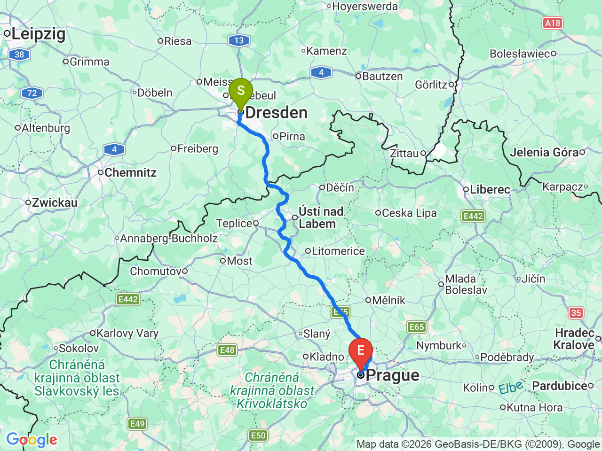
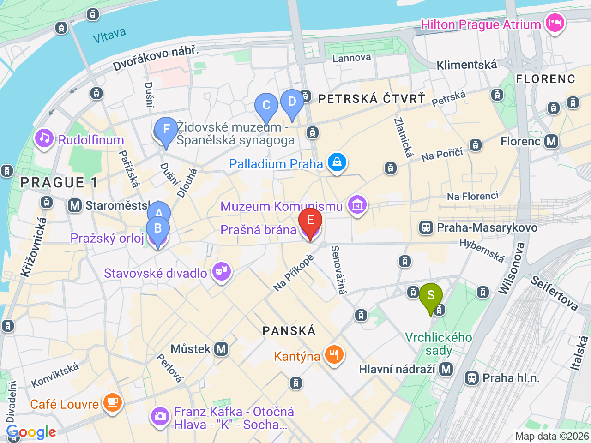

Day 24 · 2026-09-08（二）
捷克・布拉格/CK小鎮 Day 1/5
德勒斯登賦歸 → 布拉格老城初體驗
上午德勒斯登悠閒收尾，RJ直達布拉格，傍晚老城廣場遇上天文鐘整點報時
💱捷克幣匯率參考（查詢當日）：1 CZK ≈ 0.041 EUR（約 100 CZK ≈ 4.1 EUR）；1 CZK ≈ 1.52 TWD（約 100 CZK ≈ 152 TWD）。實際匯率會隨市場波動，僅供參考，換匯/刷卡以當下實際匯率為準
德勒斯登→布拉格

布拉格老城（含飯店）

固定時間行程DAY 24
| 時間 | 地點 | 地點 (英文) | 交通方式／班次 | 價格 | 預計停留(分鐘) | 備註 |
|---|---|---|---|---|---|---|
| 約09:00-09:30 | 德勒斯登飯店退房，前往 Dresden Hbf | 步行/電車 | 比原計畫提前，11:10發車前抵達車站即可 | |||
| 11:10 | 搭 RJ 173 前往布拉格 | RJ/EC直達（ČD/ÖBB聯營Railjet）約2h15m | 已訂票；Bad Schandau–Děčín段為易北河谷風景精華 | |||
| 13:25 | 抵達 Praha hlavní nádraží | 1Praha hlavní nádraží, Prague | 步行約10分鐘 | |||
| 13:50 | 飯店 check-in | 2Franz BY ZEITRAUM, Prague | 步行 | 之後兩晚都住這裡；提早抵達，下午時間更充裕 |
彈性探索景點DAY 24
| 地點 | 地點 (英文) | 預計停留(分鐘) | 價格 | 備註 |
|---|---|---|---|---|
| 舊城廣場 | AStaroměstské náměstí, Prague | 約30分鐘 | 免費 | 布拉格最熱鬧的廣場，周邊哥德式與巴洛克建築林立 |
| 布拉格天文鐘 | BPražský orloj, Prague | 約20分鐘 | 免費（整點報時） | 就在舊城廣場旁，建議算好時間看整點報時機關報偶表演 |
| 火藥塔 | CPrašná brána, Prague | 約20分鐘 | 外觀免費，登塔約CZK150 | 哥德式城門塔樓，不登塔看外觀就好，登塔可俯瞰老城 |
| 晚餐：Lokál Dlouhááá | DLokál Dlouhááá, Prague | 約60分鐘 | 見上方三餐資訊 | 舊城廣場步行5分鐘，道地啤酒館 |
| 晚餐備案：Sisters Bistro | FSisters Bistro, Prague | 約45分鐘 | 約 CZK 100-180／人 | 就在 Lokál 隔壁，主打道地開面三明治 chlebíčky，份量較輕 |
| 晚餐備案：Kolkovna V Kolkovně | GKolkovna V Kolkovně, Prague | 約60分鐘 | 約 CZK 200-350／人 | 連鎖但品質穩定、環境較舒適，老城廣場步行3分鐘，適合不想排隊時 |
每日三餐
晚餐
Lokál DlouháááLokál Dlouhááá約 CZK 150-250／人
📍 Dlouhá 33, Prague道地啤酒館，現榨 Pilsner Urquell、匈牙利燉牛肉(guláš)，CP值高；隔壁 Sisters Bistro（Dlouhá 39）主打道地開面三明治 chlebíčky，也可以兩間一起吃；備案 Kolkovna V Kolkovně（V Kolkovně 8，連鎖但穩定，環境較舒適，老城廣場步行3分鐘）
住宿資訊